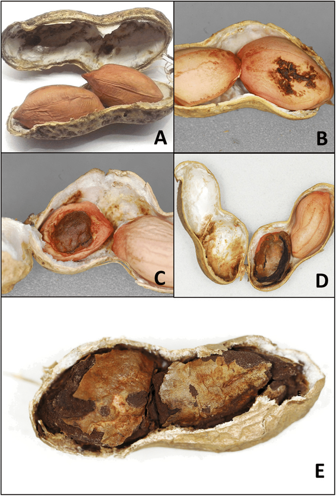

3 Indice de severidad
3.1 Maní/carbón

url_mani <- "https://docs.google.com/spreadsheets/d/1QJuQ2Zm26ufVYklB7vak6gQej3Xtyvbtj1yPKDlczD0/edit#gid=0"
mani <- gsheet::gsheet2tbl(url_mani)
url_mani <- url_mani %>%
mutate_at(vars(c("trt", "sprays", "bk")),funs(factor))
maniExploramos cuántas plantas (sub-muestra) fueron evaluadas por parcela:
Calculamos la incidencia por parcela y agregamos una columna para identificar a la planta como sub-muestra dentro de cada parcela:
mani1 <- mani %>%
mutate(
trt = relevel(trt, ref="check"),
dis_pod = rowSums(select(., matches('x1|x2|x3|x4'))),
inc = dis_pod/n_pods,
x0_p = rowSums(select(., matches('x0')))/n_pods,
x3.4 = rowSums(select(., matches('x3|x4'))),
sev0_1 = (0*x0 + 0.01*x1 +0.1*x2 + 0.7*x3 + 1*x4)/ n_pods) %>%
group_by(sprays, trt, bk) %>%
mutate(sample = row_number()) %>%
# filter(sprays!=1,
# trt!="Epoxiconazole") %>%
ungroup
mani1